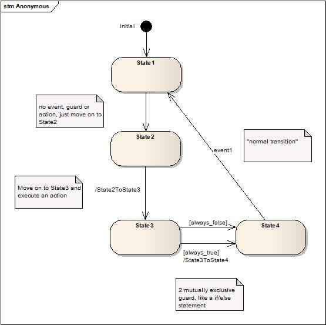

Functor 前端
Functor 前端是目前最值得推荐的前端. 它比标准前端更强大, 转移表也更具可读性, 还让状态机各部分的复用变得更容易. 与 eUML 一样, 它也附带大量预定义动作. 实际上, eUML 通过 Boost.Typeof 与 Boost.Proto 生成的就是 Functor 前端, 因此两者提供的功能相同.
MSM 在前面前端中提供的行有不同的形式. 我们已经见过 a_row, g_row, _row, row, 还不算内部行. 需要掌握的已经够多了, 为什么还要定义新的行? 这些类型有一些缺点:
-
它们的输入量和信息量都超出我们的期望. 这意味着语法噪音和更多需要学习的东西.
-
函数指针在 C++ 中颇为怪异.
-
动作/守卫的签名受限, 不允许参数有更多变化 (源状态、目标状态、当前状态机等).
-
把动作代码从一个状态机复用到另一个状态机并不容易.
转移表
我们可以把简单教程中转移表的定义改为:
struct transition_table : mpl::vector<
// Start Event Target Action Guard
// +---------+------------+-----------+---------------------------+----------------------------+
Row < Stopped , play , Playing , start_playback , none >,
Row < Stopped , open_close , Open , open_drawer , none >,
Row < Stopped , stop , Stopped , none , none >,
// +---------+------------+-----------+---------------------------+----------------------------+
Row < Open , open_close , Empty , close_drawer , none >,
// +---------+------------+-----------+---------------------------+----------------------------+
Row < Empty , open_close , Open , open_drawer , none >,
Row < Empty , cd_detected, Stopped , store_cd_info , good_disk_format >,
g_row< Empty , cd_detected, Playing , &player_::store_cd_info , &player_::auto_start >,
// +---------+------------+-----------+---------------------------+----------------------------+
Row < Playing , stop , Stopped , stop_playback , none >,
Row < Playing , pause , Paused , pause_playback , none >,
Row < Playing , open_close , Open , stop_and_open , none >,
// +---------+------------+-----------+---------------------------+----------------------------+
Row < Paused , end_pause , Playing , resume_playback , none >,
Row < Paused , stop , Stopped , stop_playback , none >,
Row < Paused , open_close , Open , stop_and_open , none >
// +---------+------------+-----------+---------------------------+----------------------------+
> {};转移现在是 "Row" 类型, 恰好有 5 个模板参数: 源状态、事件、目标状态、动作和守卫. 哪里没有内容 (例如动作和守卫), 就写 "none". 动作和守卫不再是方法, 而是仿函数, 其参数为所收到的事件、状态机、源状态和目标状态:
struct store_cd_info
{
template <class Event, class Fsm, class SourceState, class TargetState>
void operator()(Event const&, Fsm& fsm, SourceState&, TargetState&)
{
cout << "player::store_cd_info" << endl;
fsm.process_event(play());
}
};仿函数相对于函数的优势在于仿函数是通用且可复用的. 它们还允许传递除事件之外的更多参数. 守卫仿函数与此相同, 但其 operator() 返回 bool.
也可以混用来自不同前端的行. 为了演示这一点, 转移表中保留了一个 g_row. 注释: 若动作仿函数被用在某个包含于顶层状态机之内的状态机的转移表中, ``fsm'' 参数指的是引用该动作的最低层状态机, 而非顶层状态机.
为了说明可复用这一点, MSM 自带了一整套预定义仿函数. 完整清单请参见 eUML. 例如, 我们现在将把第一个动作替换为一个动作序列, 并把守卫替换为一个更复杂的仿函数.
我们决定现在要在第一条转移 (Stopped → Playing) 中执行两个动作. 只需把动作 start_playback 改为
ActionSequence_< mpl::vector<some_action, start_playback> >现在每次经过该转移都会执行 some_action 和 start_playback. ActionSequence_ 是一个按顺序调用 mpl::vector 中每个动作的仿函数.
我们还想把 good_disk_format 替换为如下类型的条件: ``good_disk_format && (some_condition || some_other_condition)''. 可以用 And_ 和 Or_ 仿函数实现这一点:
And_<good_disk_format,Or_< some_condition , some_other_condition> >它甚至开始有几分函数式编程的样子了. MSM 自带用于运算符、状态机操作、STL 算法或容器方法的仿函数.
用 lambda 充当仿函数 (C++20)
如果可以使用 C++20, 你就能用 lambda 充当仿函数来缩短仿函数语法. store_cd_info 仿函数可以用 lambda 重写如下:
using store_cd_info = msm::front::Lambda<
[](auto const& /*event*/, auto& fsm, auto& /*source*/, auto& /*target*/)
{
cout << "player::store_cd_info" << endl;
fsm.process_event(play());
}>;简化的仿函数签名 (仅 backmp11)
backmp11 后端允许你使用更短的仿函数签名, 减少动作与守卫仿函数定义的样板代码. 它会自动检测你的仿函数有多少个参数, 并以相应的实参调用它们.
支持以下三种签名:
完整签名
struct store_cd_info
{
template <class Event, class Fsm, class SourceState, class TargetState>
void operator()(Event const&, Fsm& fsm, SourceState&, TargetState&)
{
cout << "player::store_cd_info" << endl;
fsm.process_event(play());
}
};仅事件与 FSM
struct store_cd_info
{
template <class Event, class Fsm>
void operator()(Event const&, Fsm& fsm)
{
cout << "player::store_cd_info" << endl;
fsm.process_event(play());
}
};仅 FSM
struct store_cd_info
{
template <class Fsm>
void operator()(Fsm& fsm)
{
cout << "player::store_cd_info" << endl;
fsm.process_event(play());
}
};lambda 同样支持简化签名, 提供了一种以最少样板代码定义仿函数的方式:
using store_cd_info = msm::front::Lambda<
[](auto& fsm)
{
cout << "player::store_cd_info" << endl;
fsm.process_event(play());
}>;定义带入口/出口动作的状态
你可能已经注意到, 我们刚刚展示了一个不同的转移表, 甚至混用了来自不同前端的行. 这意味着你可以这样做, 而状态定义保持不变. 大多数示例正是这样做的, 因为这是最简单的方案. 你既能享受第一种前端的简洁, 又能获得新转移类型的扩展能力. 这篇教程由前面的示例改编而来, 正是这样做的.
当然, 也可以定义入口和出口动作同样以仿函数提供的状态, 因为这些正是 eUML 生成的东西, 而且两个前端是等价的. 例如, 我们可以把一个状态定义为:
struct Empty_Entry
{
template <class Event,class Fsm,class State>
void operator()(Event const&,Fsm&,State&)
{
...
}
}; // same for Empty_Exit
struct Empty_tag {};
struct Empty : public msm::front::euml::func_state<Empty_tag,Empty_Entry,Empty_Exit> {};这也意味着你可以像在转移表中那样, 编写由更复杂动作组合构成的入口 / 出口动作. 因此前面的示例可以被重写.
不过通常人们可能会使用标准状态定义, 它提供的能力与此前端的状态定义相同, 除非你需要某些自带的预定义仿函数, 或者是函数式编程的爱好者.
在动作 / 守卫中实际做什么 (第 2 部分)?
在使用基本前端时, 我们看到了如何通过事件向动作传递数据, 如何把所有状态共有的数据存放在状态机中, 把与状态相关的数据存放在状态中并在入口 / 出口动作里作为模板参数访问. 但缺少的是在转移动作中访问相关状态数据的能力. 这一前端做到了这一点. 转移的源状态和目标状态也作为参数给出. 如果当前计算的状态要存放在转移的源状态中 (无论它是哪个状态), 我们就可以访问它:
struct send_rocket
{
template <class Fsm,class Evt,class SourceState,class TargetState>
void operator()(Evt const&, Fsm& fsm, SourceState& src,TargetState& )
{
fire_rocket(evt.direction, src.current_calculation);
}
};用基本前端在动作内部生成新事件有点别扭. 有了 Functor 前端就干净多了:
struct send_rocket
{
template <class Fsm,class Evt,class SourceState,class TargetState>
void operator()(Evt const& evt, Fsm& fsm, SourceState& src,TargetState&)
{
fire_rocket(evt.direction, src.current_calculation);
fsm.process_event(rocket_launched());
}
};定义一个简单的状态机
与状态一样, 状态机既可以用前面前端定义 (如前一个示例所示), 也可以用 Functor 前端定义, 后者允许你把状态机的入口和出口函数定义为仿函数, 如该示例所示.
匿名转移
匿名 (完成) 转移是没有具名事件的转移. 我们已经看到, 当不需要动作或守卫时, 这一前端如何使用 none. 我们也可以用 none 代替事件来标记匿名转移. 例如, 下面的转移立即从 State1 转移到 State2:
Row < State1 , none , State2 >下面的转移做同样的事情, 但在此过程中调用一个动作:
Row < State1 , none , State2 , State1ToState2, none >下面的图展示了一个示例及其实现:

内部转移
下面的示例在 Functor 前端中使用内部转移. 与简单标准前端一样, 这里支持两种定义内部转移的方式:
-
在状态机的转移表中提供
Row并以none作为目标状态, 就定义了一条内部转移. -
在状态或子状态机内部提供一个
internal_transition_table(由Internal行构成), 则定义符合 UML 的内部转移, 且其优先级更高. -
定义在
internal_transition_table内部的转移不需要源或目标状态, 因为源状态是已知的 (Internal实际上就是没有源和目标状态的Row).
与 standard front-end internal transitions 一样, 内部转移表会被并入主状态机的表, 从而让你可以分散转移表的定义并复用状态.
子状态机还有一项额外好处: 它们可以同时拥有标准 transition_table 和一个 internal_transition_table (后者优先级更高). 如果你以后决定把一个状态升级为完整的子状态机, 这会让事情更容易. 它也略快于标准替代方案 (添加正交区域), 因为事件分发若被内部表接受, 就不会继续进入子区域. 这带来的是 O(1) 分发而非 O(区域数). 虽然示例用的是 eUML, 但这一前端同样可以做到.
Kleene (任意) 事件
通常, MSM 需要一个事件来触发转移. 但有些情况下, 任何事件, 无论哪个, 都可以:
-
如果你想减少转移的数量: 任何事件都可以, 具体发生什么可能由守卫来决定.
-
伪入口状态未必想知道激活它们的事件, 或者可能只想知道它的某个属性.
MSM 支持把 boost::any 作为可接受的事件. 该事件会匹配任何事件, 也就是说, 如果一条以 boost::any 作为事件的转移源自当前状态, 这条转移就会触发 (前提是没有守卫或更高优先级的转移先行触发). 该事件名为 Kleene, 得名于正则表达式中使用的 Kleene 星号.
例如, 名为 fsm 的状态机实例上的这条转移:
Row < State1, boost::any, State2>将在 State1 处于活动状态且处理了一个事件时触发:
fsm.process_event(whatever_event());此时, 你可以在转移动作中使用这个 any 事件, 并通过调用例如 boost::any::type() 取回原始事件.
也可以通过为给定事件特化 boost::msm::is_kleene_event 来支持你自己的 Kleene 事件, 例如:
namespace boost { namespace msm{
template<>
struct is_kleene_event< my_event >
{
typedef boost::mpl::true_ type;
};
}}唯一的要求是: 该事件必须有一个可以从状态机上最初处理的事件进行复制的复制构造函数.